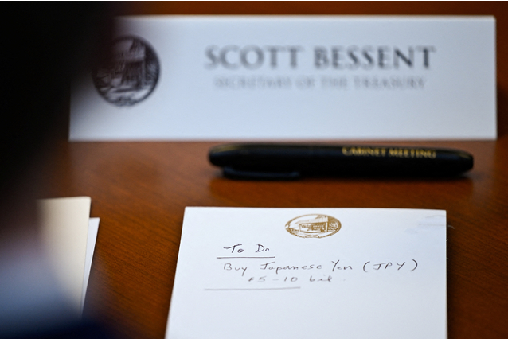

표지
미국이 직접
엔을 사기로 했다
각료회의 메모가 찍혔다 — “To Do: 엔화 50~100억 달러 매입”
환율 · 미국국채
2011년 이후 첫 미·일 공동개입입니다. 그런데 진짜 관전 포인트는 개입 자체가 아니라 달러를 어디서 구하느냐였습니다.
옆으로 넘겨보세요. 오른쪽 위 회색 숫자는 원문 문단 번호입니다.
각료회의 메모가 찍혔다 — “To Do: 엔화 50~100억 달러 매입”
04.30–054월 30일 엔이 160엔을 뚫자 일본 재무성이 개입했다. 하루 350억 달러, 5월까지 총 730억 달러.
외환보유액이 한 달 새 771억 달러 줄어 개입이 확인됐다.
효과는 없었다. 잠깐 강해졌다 다시 약해졌다.
05.11베센트 재무장관이 일본으로 날아가 회담했고, 일본 재무상은 “과도한 변동성에 대응하는 개입이 허용된다”는 확인을 받았다고 밝혔다.
다만 베센트는 일본은행의 금리 인상이 먼저라는 조건을 달았다.6월 16일 일본은행이 금리를 올려 선제 조건을 이행했다.
07.306월 22일 엔이 40년 만에 가장 약한 161엔까지 밀렸다.
7월 30일, 일본은 하루 투입액으로 역사상 최대인 589억 달러를 던져 164 근처의 엔을 158까지 내렸다.그 직후 베센트의 메모가 노출됐고, 8월 3일 공동개입 발표가 예고됐다.
엔을 강세로 만들려면 달러를 팔고 엔을 사야 한다. 그럼 그 달러는 어디서 오나.
일본의 실탄은 1조 3,747억 달러인데, 쉽게 쓸 수 있는 건 미국국채 1조 87억 달러다.지금까지는 이 국채를 팔아 달러를 마련해왔다.
국채를 팔면 국채가 흔해져 가격이 내리고 금리는 오른다.
베센트는 미국국채 10년물 금리를 가장 중요한 지표라고 공언해온 사람이다. 지금도 금리가 하늘을 찌르는데, 일본이 환율 잡자고 국채를 파는 걸 허용하기 어렵다.
국채를 팔지 않고 달러를 구하는 방법이다.
① 미국은 외환안정기금(ESF)의 유로화로 엔을 사준다.
② 일본은 FIMA 레포창구를 쓴다 — 뉴욕 연준에 맡겨둔 국채를 담보로 달러를 빌리고 나중에 되사는 방식.2020년 팬데믹 때 만들어진 창구로, 일본이 쓴 적은 없다. 국가별 한도 600억 달러.
“미국과 일본은 미국국채를 팔지 않고 엔화 약세에 개입하는 방법을 찾은 것 같다. … FIMA는 국가별 600억 달러가 한도인데, 필요하면 연준을 통해 한도를 늘리면 된다. 미국과 일본이 국가 차원에서 같이 움직였다는 점에 의미가 있어 보인다.”
2026년 7월 31일, 로이터가 트럼프와 각료회의 중이던 베센트 재무장관의 메모를 찍어 공개했습니다. ‘해야 할 일(To Do)’ 아래에 이렇게 적혀 있었습니다. “일본 엔화 50억~100억 달러 매입.” 그리고 엔이 강세로 돌아섰습니다.

시간을 조금 되감아보죠. 4월 30일 엔이 160엔선을 뚫자 일본 재무성이 2024년 7월 이후 첫 엔 매수 개입에 나섭니다. 그날 350억 달러를 던졌고 5월까지 총 730억 달러를 썼습니다. 5월 말 외환보유액이 한 달 새 771억 달러 줄어든 것으로 개입이 확인됐고요.
그런데 효과가 없었습니다. 엔은 잠깐 강해졌다 다시 약해지기 시작했습니다.
5월 11일, 베센트 재무장관이 일본으로 날아가 카타야마 재무상과 양자회담을 합니다. 회담 뒤 카타야마는 “작년 9월 체결한 미일 공동성명에 따라 대응하고 있음을 베센트에게 확인받았다”고 밝혔습니다. 쉽게 말하면 엔화를 강세로 만들기 위한 일본 정부의 개입을 묵인받았다는 뜻입니다.
다만 베센트는 조건을 달았습니다. 일본은행의 금리 인상이 우선이라는 것이었죠. 6월 16일 일본은행이 금리를 인상하며 선제 조건을 이행합니다. 그리고 6월 22일 엔이 40년 만에 가장 약한 161엔까지 밀리자 두 사람이 통화했고, 필요시 “과감한” 조치를 취하기로 합의했습니다.
7월 30일, 일본은 역사상 하루 투입액으로는 최대인 589억 달러를 던져 164 근처의 엔을 158까지 내렸습니다. 그 상황에서 베센트의 메모가 노출된 겁니다. 8월 3일 일본 재무상은 도쿄와 워싱턴이 엔 약세를 막기 위해 공동개입한 사실을 발표할 예정입니다. 2011년 이후 첫 미·일 공동 조치입니다.
여기서부터가 이 글의 핵심입니다. 엔을 강세로 만들려면 달러를 팔고 엔을 사야 합니다. 그럼 그 달러는 어디서 나올까요.
일본이 쏟아붓는 자금은 재무성이 관리하는 외국환자금 특별회계에서 나옵니다. 의사결정은 재무성이 하고 실행만 일본은행이 하는 구조라, 주도권은 재무성에 있습니다. 베센트가 일본은행 총재가 아니라 재무상을 만나러 간 이유죠.
이 계정은 2026년 3월 말 기준 1조 3,747억 달러의 실탄을 갖고 있습니다. 그중 금이나 IMF 포지션처럼 현금화가 어려운 자산을 빼면, 쉽게 쓸 수 있는 건 뉴욕 연준·BIS 예치 달러예금 1,613억 달러와 미국국채 1조 87억 달러입니다. 예금은 비상금 성격이라 잘 안 건드리니, 보통은 미국국채를 팔아 달러를 확보해왔습니다.
국채를 팔면 국채가 흔해져 가격이 내리고 금리는 오릅니다. 그런데 베센트는 미국국채 10년물 금리를 가장 중요하게 보는 지표라고 공언해온 사람입니다. 지금도 금리가 하늘을 찌르는 상황에서, 일본이 환율 잡자고 미국국채를 파는 걸 허용하기 어렵죠.
방법은 두 갈래입니다. 먼저 미국 쪽. 미 재무부에는 외환안정기금(ESF)이 있고, 2025년 말 기준 436억 달러 가치의 유로화와 엔화가 들어 있습니다. 재무부가 이 중 유로화로 엔을 사줄 수 있습니다. 베센트 메모의 “엔 50~100억 달러 매입”이 실행된다면 이걸 쓰는 겁니다.
일본 쪽은 FIMA 레포창구입니다. 2020년 팬데믹 때 도입된 창구로, 각국 중앙은행이 뉴욕 연준에 맡겨둔 미국채를 담보로 달러를 일시적으로 빌리고 나중에 되사는 방식입니다. 국가별 한도는 600억 달러이고, 일본이 이 창구를 쓴 적은 없습니다.
국채를 파는 게 아니라 맡기는 것이므로, 시장에 국채 물량이 나오지 않습니다. 금리를 건드리지 않고 달러를 구하는 길을 찾은 셈이죠.
“미국과 일본은 미국국채를 팔지 않고 엔화 약세에 개입하는 방법을 찾은 것 같다. 미국은 ESF로 지원하고, 일본은 FIMA 창구를 활용해서 국채를 담보로 맡기고 달러를 빌려서 파는 것이다.
FIMA는 국가별 600억 달러가 한도인데, 필요하면 연준을 통해서 한도를 늘리면 된다. 미국과 일본이 국가 차원에서 같이 움직였다는 점에 의미가 있어 보인다.”